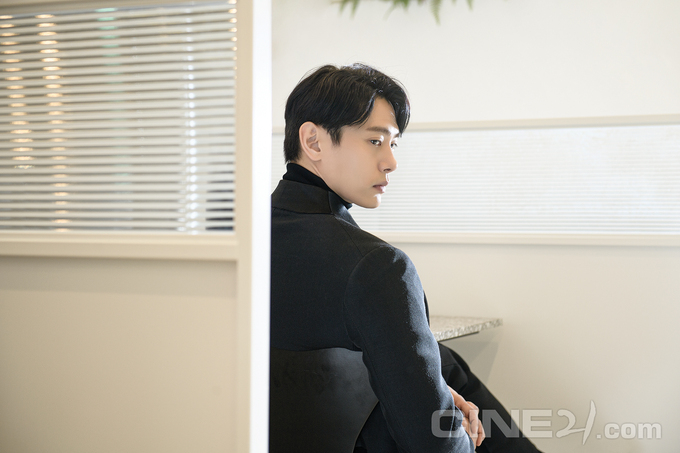
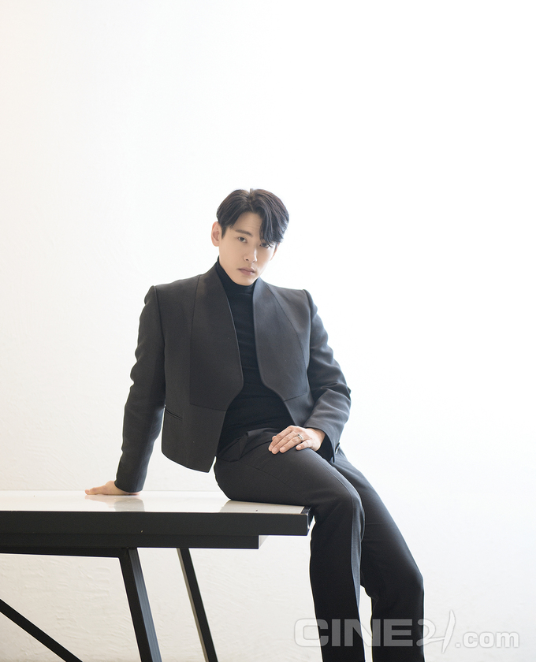

[액터] '보건교사 안은영' 유태오 - 솔직한 과정주의자
글 김소미 사진 최성열 2020-10-29

“그 질문에는 두 갈래의 의미가 담겨 있다고 볼 수 있을 텐데요,
우선 객관의 영역에서 하나를 답하자면….” 영화 퍼스트 리폼드에서
‘신이 우리를 용서하지 않을 것’이라는 환경운동가와 격렬한 토론을
벌이고 “희열을 느꼈다”(It’s exhilarating)던 톨러 목사처럼, 풍부한
감정과 논리로 대화의 맥을 이끄는 배우 유태오와의 만남은 질문만 준비된
기자에게 자꾸만 대답하고 싶은 욕구를 안겼다. 단어 하나하나를 정교하게
더듬는 그의 태도가 “옛날엔 확실히 한국어가 부족했다”는 해외파 배우의
노력과 성실성에서만 비롯된 것은 아닐 테다.
유태오는 자신에게 솔직하려고 의미를 허투루 넘겨짚지 않는 것처럼 보였다.
답습하지 않으려는 사람과의 대화엔 상대를 긴장시키는 마력이 있다. 러시아영화
레토에서 빅토르 최를 연기한 뒤 단숨에 도약한 그는, 지난 2년간 한국에서
영화·드라마를 쉼 없이 병행하며 ‘뉴페이스’와 ‘스타’의 간극을 차근차근 좁혀나간 배우다.
머니게임에서 사랑만큼은 순정인 빌런 유진 한으로 분하면서 확고한 팬덤을 형성한
그가 이번엔 이경미 감독의 보건교사 안은영을 통해 매끈한 슈트 대신 폭탄 머리를
장착하고 나타났다. 안은영의 욕지기를 불러일으키는 주범인 그 남자, 수상쩍게 학교 정원을
누비는 영어 교사 메켄지의 이야기를 들으면서 여러모로 희열을 느꼈다.
-머니게임을 결정타로 해 배우 유태오의 인기를 심심찮게 체감할 수 있는 요즘이다.
문득 이런 것이 궁금해졌다. 오랜 무명 생활 동안 언젠가는 유명해지리라 예감했나.
=현실에 관한 대답과 자기 믿음에 관한 대답, 두 가지를 말할 수 있을 것 같다.
어떤 배우가 성공할 확률 같은 것을 데이터상으로 따진다면 나는 원래 성공하면 안되는 케이스다.
옛날엔 말도 제대로 못했고, 연기를 배우긴 했지만 낯선 문화와 감수성 속에서 전달해야 했으니까
여러모로 성공 가능성이 적은 배우지. 그런데 운명적으로 레토를 만났고 칸국제영화제까지 가면서
유태오라는 새로운 캐릭터에 대한 물음표가 나를 다음 캐스팅으로 계속 이어준 게 아닐까 싶다.
나 또한 일단 내 모습을 더 보여주자는 생각에서 양적으로 최대한 많은 작품에 출연하려 했다.
한 2년 정도 그렇게 해보자고 전략과 희망을 품어본 거다.
-올해 그 2년의 레이스를 완주했다. 자평하자면.
=아스달 연대기 1회에서 죽었고, 초콜릿은 3회까지 나왔다가 죽었고,
배가본드는 10회에서 죽었고…. 그러니까 점점 분량이 많아진 거지? (웃음)
중간에 계속 영화 작업도 하고, 종종 단역으로도 나오고, 나한텐 꽤 이상적인 과정으로 느껴진다.
머니게임 촬영 땐 드라마 콜시트(촬영 개요)에 내 이름이 네 번째로 올라가 있는 걸 보고 기분이 좋았고,
곧 작업할 제인 작가의 지금, 헤어지는 중입니다에선 남자주인공으로 선택되어서 정말 감사하다.
-메켄지는 오묘한 빌런이다. 이경미 감독은 각색 과정에서 원작에 있는 다른 선생님 캐릭터들의 비중을 줄이는 대신
메켄지에 집중도를 높였다. 극 초반에 안은영에게 위기감을 불러일으키고는 연기처럼 사라진다는 점에서 굉장히
미스터리한 인물이라 해석의 여지가 많았을 것 같다.
=내게는 선명했다. 젤리가 사람의 욕망을 상징한다는 내용에서 캐릭터 해석의 힌트를 얻었다. 해외SF,
판타지 장르의 아키타입들을 참고했다. 매드사이언티스트 부류의 악당들. 과학자,
마법사 혹은 자기 몸에 직접 실험하는 생물학자라든지. (웃음) 해리 포터의 볼트모어,
고스트버스터즈의 배우 피터 벤크먼 같은 인물들의 실루엣과 전형성을 한번 따라가보자 싶었다.
-메켄지는 레토 이후 유태오가 보여준 캐릭터 중 가장 괴짜스럽고 기이한 매력이 돋보이는
인물이 아닐까. 늘 폭탄 머리에 고르는 티셔츠 색깔도 심상치 않고, 숨겨둔 고약한 심성이 다분히 느껴진다.
(웃음)이경미 감독과 작업하면서 스스로에게 새롭게 발견한 면모가 있나.
=캐릭터 분석의 관점에서 말하자면 나는 나를 연구하고 발견하는 형의 배우가 아니다.
모든 게 이미 내 속에 존재한다고 믿는 쪽이고, 그중 어느 한쪽을 보여주는 것뿐이다.
그게 라가즈(아스달 연대기)가 될 수도, 메켄지가 될 수도 있다. 내가 캐릭터에 관해 주관적으로 느꼈던
감수성과 타인이 객관적으로 생각하는 캐릭터가 만나는 중간쯤이 대중이 받아들이는 내 모습인 것 같다.
-얼마 전 인스타그램 라이브에서 말하길, 배우로서는 아주 진지하게 메켄지를 연기했는데
정작 시청자들 사이에선 은근히 귀엽다는 반응이 많다고. 유태오가 연기하면 악역도 마냥 밉지 않다는 얘기이기도 한데,
이런 간극에 대해선 어떻게 느끼나.
=내가 연기한 것과 완성된 결과물 사이의 차이는 항상 있다. 그건 감독과 편집자,
그리고 관객의 일이라 생각해서 거기에 대해선 별다른 생각이 없다. 내가 얼마나 진지하고 가식적인 느낌으로
메켄지를 연기했는지 하는 부분은 일종의 배우의 기술일 뿐이니까. 예를 들어 영화 자칼이 온다에서
콧수염이란 왼손잡이 캐릭터를 연기할 때 액션신에서 왼손으로 칼을 던져야 했는데, 준비하면서 밥 먹을 때나
양치할 때 계속 왼손을 썼다. 그건 그냥 캐릭터에 대한 내 개인적인 궁금증이었다. 스스로 진솔하게 그 숙제를 풀었고
준비가 되었다는 느낌, 그러므로 나는 잘할 수 있다는 믿음을 갖는 과정을 일종의 취미 생활처럼 가지려고 한다.
-결과물보다 스스로의 통과의례에 무게를 두는 쪽인가.
=그렇지. 쉽게 말하면 호기심이다. 이소룡의 인터뷰를 보면서 배웠다.
무언가 하는 척을 할 게 아니라 내가 나 자신에게 가장 진솔할 것을 가르치면서,
그게 정말 쉽지 않다고 이야기한다. 사실 사회 생활을 할수록… 음… 자칫 칭찬에 취할 수도 있겠다는 생각이 든다.
거기서 거리두기, 나를 합리화시키지 않기에 대해 고민한다. ‘여기까지면 충분하다’,
‘아니다, 더 해야 한다’ 사이의 갈등 안에서 사는 것 같다. 과거도 미래도 없이 지금 나한테 솔직한 것은 무엇인가,
그런 생각을 많이 하는 편이다. 확실히 난 결과주의자가 아니라 과정주의자다.
-배가본드의 제롬, 머니게임의 유진 한, 보건교사 안은영의 메켄지, 굳이 더하자면 버티고의 진수까지.
레토 이후 연기한 캐릭터 중에선 비밀스럽게 혹은 낯설게 풀이되는 인물들이 꽤 여럿이었다.
외모보다는 배우가 가진 다양한 정체성이나 이국적인 이력의 영향이 아닌가 싶었는데.
=처음엔 아무래도 신비성을 가진 캐릭터를 많이 제안받은 것 같다.
추측하자면 어딘가 뚝 떨어진 사람 같아 보이기도 하고 어느 정도 마스크가 좋으니까
이런 배우에 캐릭터를 입혔을 때 어떤 방식으로 풀어야 잘 먹힐까, 제작진이 그런 고민을 하는 과정에서 생긴 경향성 같다.
이런 건 이야기하기가 참 어려운데. (웃음) 나 같은 타입의 배우는 커리어의 롤모델을 찾기가 힘들다
-연기한 역할들 바깥에서 신비성에 관해 말하자면, 실제 배우 유태오는 SNS에서 자신을 드러내는 데 거리낌이 없는 쪽이다.
=내 개인적인 삶에서는 이왕이면 다 열어놓고, 풀고, 소통하려고 한다. 숨기지 않기에 들킬 게 없는 사람이 되자고 생각한다.
민낯을 드러내고 살아가려는 노력을 계속해서 하고 있고 그게 편하다. 그런데 내가 자유롭게 드러낸다고 해도
‘저 배우의 진짜 생각이 무엇인가’ 하는 의문은 여전히 따라붙는 것 같다. 셰프가 자기 요리법을 다 공개해도,
실은 우리가 모르는 비밀이 어딘가 있을 거라고 생각하게 되는 것처럼.
-스타가 될수록 특정한 이미지나 역량을 요구받으면서 납작해지기 쉬운데,
그런 그물망을 잘 벗어나는 것 같아서 묘한 해방감을 안긴다.
=해방감이 정확히 무슨 뜻인가.
-음… 기분이 자유로워진다고 표현하면 어떨까.
=아! 그게 내가 아무것도 아닌 무명 시절부터 그냥 내 스타일을 노출시켜버렸으니까,
산업도 나를 어떤 틀 안에 가두기보다는 적극적으로 내게 맞춰주고 해석하는 부분이 있는 것 같다.
산업 시스템을 언급한 김에, 내가 나를 먼저 드러내고 산업이 내게 맞춰 고민을 해주면 그게 진정한 윈윈 같다.
관객도 즐겁고, 산업도 즐겁고, 연기하는 나도 즐겁고. 하하. 얼마나 자유롭고 평화롭나,
그렇게 솔직하게 살 수 있다는 게. 모두가 즐겁잖아!
-10대 때 온라인 커뮤니티에 시를 쓰기도 하고, 동화 작가로 양말괴물 테오도 출판했다.
쓰기에 대한 욕구는 유년 시절의 영향 같은 게 있었을까.
=밖으로 예술적 가능성을 끄집어내주는 환경에서 자란 건 아니다. 파독 광부-간호사 부모님과 함께 노동계급의 문화에서 자랐으니까.
오히려 없어서 터져나왔던 것 같은 느낌? 어릴 땐 하고 싶은 게 무엇인지 인식도 못하면서 그게 농구인 줄 알고 몰두했었는데,
알고 보니 아니었던 거지.
-운동선수 이력도 있고 시, 동화, 미술 등 관심사가 풍요로운데 배우가 천직이라 느끼나.
=내가 못하는 게 너무 많은데 그중에서 제일 덜 못하는 게 연기라고 종종 생각한다. 연기 이외의 취미 생활을 밤새워가며 강박적으로 파고들 때도 있는데,
결국엔 그것도 연기에 관한 영감으로 이어진다.

-예술적으로 민감한 안목을 지녔지만, 작품을 선택할 때는 경험과 확장에 더 의미를 둔다는 인상을 받았다.
앞서 2년간의 전략 같은 걸 언급하기도 했는데 커리어 계발에 있어서 스스로 야심가라 느끼나.
=슈퍼스타가 되고 싶다. 소신껏 임할 수 있는 예술적 작업도 좋고, 상업적인 대규모 작품도 하고 싶고,
욕심이 많다. 다만 그렇게 안되어도 그만이다. 그 방향대로 향하는 과정이 중요하니까.
물론 크고 작은 결과에 집중하면서 꿈을 키우는 사람도 그것대로 아름답다. 내 취미 중 하나가 자기 전에 팟캐스트,
유튜브 강의 듣는 건데 동양철학에 깊은 관심을 뒀던 영국 철학자 앨런 와츠를 좋아한다. 자신이 원하는 것이 모두 이루어지는
꿈을 상상한 뒤, 이후 똑같은 꿈을 매일 밤 반복해서 꾼다고 생각하면 금세 흥분이 식지 않겠냐는 이야기를 하면서
결국 아무것도 예상할 수 없는 현실이 가장 흥미로워지는 경지에 대해 말한다.
-미국과 영국에서 정통 연기 이론을 공부했다. 실전에선 이론적 테크닉에 얼마나 무게를 두나.
=100%. 다 내가 배워온 기술들에 기반해 연기한다. 리 스트라스버그 연기학교, 로열 아카데미 셰익스피어 인텐시브 코스를 거쳤고,
좋아하는 배우들을 가르친 연기 선생님들을 직접 찾아다니며 개인 코칭을 받았다. 리 스트라스버그, 스텔라 애들러,
샌퍼드 마이즈너(메소드 연기의 3인방) 모두 스타니 슬랍스키 밑에서 각자 다른 시기에 연기를 공부했던 인물들이니
스타니슬랍스키의 삶의 변화에 따라 연기 테크닉도 다르다. 한쪽에 갇혀 있는 게 싫어서, 이 학교 저 학교 다니면서 기술들을 체험했다.
그중 안되는 건 버리고 되는 건 내 철학으로 흡수하자, 그런 식이었다.
-보통 사람도 외국어로 말할 경우 목소리의 톤이나 성향 자체가 달라진다는 느낌을 받는다.
여러 언어로 연기한다는 것에는 무언가 다른 점이 있을까.
=큰 장점이다. 한국어가 좋아지면서 영어로 하는 연기가 좋아졌다는 느낌을 받는다.
간단한 영어 대사에도 한국 문화에서 배운 감수성을 실을 수 있게 되었달까. 여러 가지로 인간의 추상적 감정을 표현하기엔
언어가 항상 부족하다. 그리고 확실히 다른 문화를 깊이 배우는 것이 배우에게 영향을 주는 것 같다. 물론 그런 게 전혀 필요 없는 사람도
봤다. 예를 들어 대만 배우 이강생? 대만 시골에서 그냥 만날 차이밍량 감독이랑 작업할 뿐이다.
(웃음) 내 경우는 정체성이 불분명했기 때문에 최대한 많은 걸 접근해서 소화하고 싶었던 거고,
정체성이 애초에 너무나 확고한 사람은 그런게 필요 없다.
-고등학교에서 동아리 활동을 할 때 왕가위 감독의 중경삼림을 친구들에게 소개했다고 인터뷰한 적 있다.
레토를 보고 언뜻 중경삼림의 금성무와 비슷한 배우가 되지 않을까 생각하기도 했었는데,
요즘 유태오를 자극하는 새로운 감독이나 배우가 있다면.
=마티아스 쇼에나에츠와 톰 하디. 해외 배우 중 나와 비슷한 과의 배우들에게서 영감을 얻는 편이다.
둘 다 소년적인 면이 있으면서도 대개 남성적인 역할을 소화한다. 그 콘트라스트에서 나오는 감수성이 정말 매력적이다.
어떤 영화가 나를 깊숙이 건드렸던 마지막 경험은 미하엘 하네케의 하얀 리본을 보면서 겪었다.
한 일주일 정신을 못 차릴 만큼 좋았던 것 같다.
아마 내가 독일 출신이고, 어렸을 때 느꼈던 감정을 그 영화가 품고 있었기 때문이 아닐까 싶다.
-촬영을 마친 신작 영화로 홍지영 감독의 새해전야가 있다.
=옴니버스로 구성된 로맨틱 코미디 영화인데 최수영 배우와 함께 총 네쌍 중 한 커플을 연기했다.
스노보드 선수 역이다. 지난해 겨울에 새해전야> 촬영하면서 스노보드를 배우고, 머니게임 현장에 갔다가
또 중간에 벨기에 해외 촬영도 가는 식으로, 진짜 열심히 했다. 다양한 역할을 소화한 지난 2년간은 배우로서의 내 근육을 어디까지
스트레칭시킬 수 있나 실험하는 시간이었다. 다행히 스스로 아쉽지 않게 잘 끝낸 것 같긴 한데….
앞으로는 그래도 좀더 여유 있게 할 수 있으면 좋겠다.(웃음) 하나에 더 집중하면서, 스텝 바이 스텝으로.